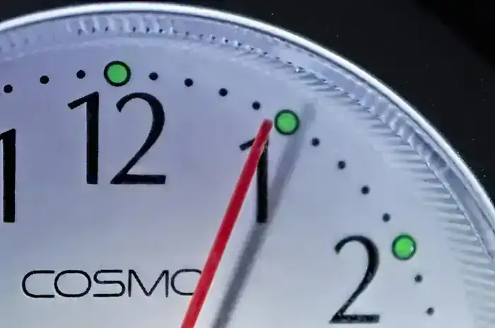
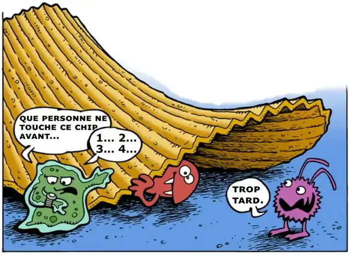
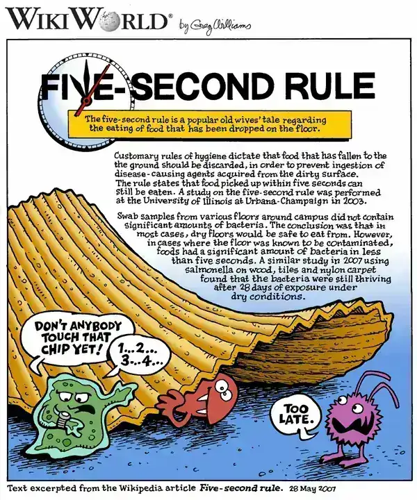

The claim
The rule holds that food dropped on the floor is safe if picked up within five seconds. It is repeated as folklore and has been the subject of several studies.
Maps, diagrams and images






The evidence
Studies with food on contaminated surfaces found bacterial transfer within a second, with the amount depending on moisture and surface type rather than time. A 2016 study found the rule did not hold for any surface tested.
What is established
Documented: the rule.
Documented: immediate transfer.
Depends on: moisture and surface.
The label: debunked.
Why it is in the archive
Because someone tested it properly, which is all the archive ever asks.
Open resources on this topic
- PapersOpen-access articles: DOAJ · PubMed Central · Internet Archive Scholar
- BooksPublic-domain and borrowable copies: Open Library · Project Gutenberg · Google Books · Internet Archive
Cite this page
APA
Momin, S. (2026). The Five-Second Rule. The Larger World Archive. https://drsamonline.github.io/LARGE_GLOBE/five-second-rule.htmlMLA
Momin, Sohil. “The Five-Second Rule.” The Larger World Archive, 2026, https://drsamonline.github.io/LARGE_GLOBE/five-second-rule.html.Chicago
Momin, Sohil. “The Five-Second Rule.” The Larger World Archive, 2026. https://drsamonline.github.io/LARGE_GLOBE/five-second-rule.html.BibTeX
@misc{the2026five,
author = {Momin, Sohil},
title = {The Five-Second Rule},
year = {2026},
howpublished = {The Larger World Archive},
url = {https://drsamonline.github.io/LARGE_GLOBE/five-second-rule.html},
note = {Last reviewed 20 November 2026}
}Last reviewed 20 November 2026 · Corrections policy · this page is not peer reviewed
Sources for this page
- Wikipedia, “Five-second rule” — the claimen.wikipedia.org
- Wikipedia, “Food safety” — the fielden.wikipedia.org
- Wikipedia, “Bacteria” — the agenten.wikipedia.org
- Wikipedia, “Fomite” — the concepten.wikipedia.org